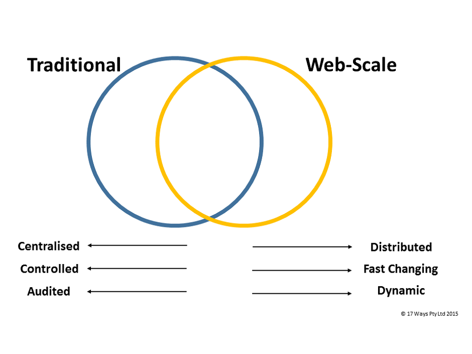

If you believe all of the hype then you should move your IT systems to the Cloud and give up on your own Data Centre. Is this really the right approach? What makes sense to move to the Cloud and what doesn't? In this article we look to answer these questions and aim to identify when the Cloud is your best solution and when you should be running it yourself.
In An Introduction to Cloud Computing we looked at Cloud technologies and some of the benefits and issues that exist with this technology. In A Brief History of the Data Centre we looked at the evolution of Data Centre technology over the last 30 years and introduced Converged Infrastructure. If you need more background on the topics discussed here then we recommend that you read these articles first.
In this article we will use the following terms:
Web-scale emerged to solve a different set of problems from those that the traditional corporate IT world had been working on for many decades.
Having said that, many of the approaches developed for Web-scale are equally applicable to corporates and in that sense Web-scale represents a disruptive and extremely healthy threat to the traditional models of corporate IT.
The secret to getting the most out of the new technology is to identify where it will work for you; i.e. the overlap in the picture above.
The easiest way to understand Cloud is to think of it as the coming together of two different things; the application of Web-scale approaches to traditional corporate IT problems. In other words, the Cloud represents the overlap in the picture above with the problems we are trying to solve coming from the traditional corporate IT world and the possible solutions coming from the Internet companies' world.
As we are fond of saying at 17 Ways - the Cloud is often a solution looking for a problem. Lets look at this from another angle and consider the drivers that are typically found in both environments.
| Aspect | Web-Scale | Traditional Data Centre |
|---|---|---|
| Type of Data | Social | Customer |
| Most data is social, owned by the contributor. | Data relates to customers and their transactions. Data is owned by the company and critical. | |
| System Lifetime | Short | Long |
| Systems evolve rapidly. Major change every 2 years. Old systems are disposable as people move to the new platforms. | Systems are expected to last a long time, minimum return is 5 years and many last over 20. | |
| Backward Compatibility | Rare | Always |
| Progress is always forwards. Focus is on today, not yesterday. | Systems must build on older systems and offer migration and access to old data. | |
| Integration Level | Low | High |
| Usually just through links on webpages or through billing and sign on systems. | Real time and batch interfaces to many systems. | |
| Time to Market | Critical | Important |
| Ability to deploy quickly is critical. Even a partially complete system is better than nothing. | Time to market is often important but usually only for products and not the IT systems. A new feature may be critical but it is unusual for a new system to be required to implement it. | |
| Acceptance of distruption | Accepted | Unacceptable |
| An acceptable risk of disruption to over systems can be taken. New software is often intended to be disruptive. | Impact on existing systems can be disastrous. | |
| Cost of Mistakes | Low | High |
| The cost of not moving forwards for Internet companies is usually death. The cost of small mistakes is rarely noticeable. | A bad mistake usually has a direct financial impact. | |
| Cost of Late Delivery | High | Medium |
| Speed is everything and there are lots of competitors. | It is important to make publicly announced dates but the cost of a bad release is much higher than any delay. | |
| Stakeholders | Few | Many |
| Most decisions can be taken unilaterally. | Many internal and external stakeholders need to be involved in system changes. | |
| Size of Changes | Small and Frequent | Large and Infrequent |
| The ability to make fast changes continuously is a feature of all Internet companies. | This is an area that many corporates are addressing by moving to more Agile software development approaches but it is still true that production releases are generally much less frequent in the corporate world. |
Look down the two lists and tick which more closely matches the problem that you are trying to solve. Add up the totals and if Web-Scale scores higher than Traditional then the Cloud is probably the right answer for you. If not, look again at the Traditional Data Centre approach.
The focus of many companies Cloud strategy starts with the infrastructure. This is driven by a belief that by adopting the Cloud, costs will reduce, speed to market will increase and performance will become truly scalable. The problem with this is that infrastructure achieves none of these things. It is applications that will be the true deliverers of the Cloud benefits, infrastructure is merely the layer upon which your applications run. Its a bit like adopting a new guage of train tracks. Sure it might be a better size and easier to lay the rails but until you have some trains that will fit on it you are wasting your time.
Don't ask your Infrastructure teams about the Cloud. Ask your Development teams. If they can see a benefit then push forward.
The standardisation that the Cloud can bring to your deployments is of great value for new applications but for existing applications it is a huge problem. In the traditional Data Centre model the infrastructure provides an extremely flexible service for the applications. If an application needs a certain package installed, the infrastructure team install it, if it needs the database search to be case sensitive, then it get it. In the Cloud model the application development teams are forced down a standardised path. Be very careful if you are presented with a TCO figure for your company's Cloud migration. It is very likely that this figure only include infrastructure cost and exclude what can be massive additional costs for the Development teams.
The Cloud isn't a revolutionary technology like PCs or the Internet, it is a new way to do the same old thing. As an end user you can't really tell if you are using the Cloud or not and for that reason Cloud adoption should be driven by your application development teams, they are the ones who can see the benefits and weigh them against the risks.
Ok, its a big table and it works the wrong way around (solution to problem rather than problem to solution) but we hope this can be a useful reference for you in any discussion around Cloud vs Converged (or Traditional) Data Centre use.
| Solution | Use | Why | Examples | Things to Consider |
|---|---|---|---|---|
| Cloud: SaaS | Non-core activities | If a suitable product is available it is likely to be cheaper than building or running your own solution. SaaS is a very mature model and makes a lot of sense to adopt. We are strong supporters of SaaS solutions. | Payroll. Office Management. |
|
| Cloud: SaaS | Specialised systems | If you need to use a system that a vendor excels in then even if it core you should consider SaaS. | Market Data systems e.g. Reuters. Customer Relationship Management. |
|
| Cloud: SaaS | Office Functions | We don't recommend that medium to large scale organisations rely upon SaaS for email, spreadsheets or word processing. | Email, presentations, spreadsheets and document management. | These functions are too critical to an organisation to run outside the corporate network. The current solutions are not mature enough and performance and data security are not guaranteed. Let the small companies and the pioneers work through this for you. Office functions are not a significant cost to larger organisations and there is only downside in trying to run these outside the Data Centre. Look elsewhere for your cost saving and Cloud adoption statistics. |
| Cloud: SaaS | Collaboration | Collaboration tools are perfect for a SaaS model as they allow you to share information with your customers and other people outside the core organisation with ease. | Instant messaging, wikis, Data Rooms and project management tools. | These tools are perfect for a SaaS model. They need to be accessible outside the organisation anyway and by using SaaS you avoid the security issues with making you internal systems available on the Internet. When connectivity is the main driver you are better connecting than being the supplier of connectivity options. |
| Cloud: SaaS | Core Business Activities | Sometimes it makes sense to use a package, even for your core activities. Generally this is because the IP is the configuration rather than the code or because you operate in an environment where the regulator overhead is prohibitive and you would like a vendor to manage it for you. | Trading and back office systems such as Fidessa or Calypso. |
|
| Public Cloud: IaaS/PaaS | Development and Testing | You may not believe it, but it is likely that your most variable workload is actually within the IT department. They need to create environments all the time and the Public Cloud can be a good place for this. | Major projects. Investigating problems. |
|
Rather than looking at the technology and trying to work out where we can use it, lets look at the different problems we are using technology to solve and see which option works best.